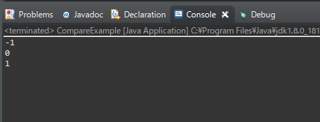

こんにちは。明月です。
この投稿はJavaでcompare関数を使う方法に関する説明です。
Javaで値を比較する関数で「equals」関数があります。このequals関数はObjectタイプにあり、全てのデータタイプで使うことができる関数です。
でもequals関数はただデータ値が同じか同じじゃないかと判断だけできるし、比較データがどっちがもっと大きいかは知ることができません。
もちろんif関数で「if (a > b) else if (a < b) else」でチェックしてもいいですが、少し品格があるように実装することはcompare関数を利用することがあります。
public class CompareExample {
public static void main(String... args) {
// a = 1, b = 2で、aがbより小さいなら「-1」
System.out.println(Integer.compare(1, 2));
// a = 2, b = 2で、aとbが同じなら「0」
System.out.println(Integer.compare(2, 2));
// a = 3, b = 2で aがbより大きいなら「1」
System.out.println(Integer.compare(3, 2));
}
}

Integerタイプでcompare関数のパラメータ基準で初めのパラメータをa、２つ目のパラメータをbと考えましょう。
aがbより小さいなら「-1」、同じなら「0」、大きいなら「1」の結果が出ます。つまり<=>順で-1,0,1の結果です。
IntegerではなくDateタイプで比較しましょう。
import java.util.Calendar;
import java.util.Date;
public class CompareExample {
public static void main(String... args) {
Date date = getDate(2020, 3, 1);
// a = 2020/3/1, b = 2020/3/2でaがbより前日なら「-1」
System.out.println(date.compareTo(getDate(2020, 3, 2)));
// a = 2020/3/1, b = 2020/3/1でaとbが同日なら「0」
System.out.println(date.compareTo(getDate(2020, 3, 1)));
// a = 2020/3/1, b = 2020/2/29でaがbより後日なら「1」
System.out.println(date.compareTo(getDate(2020, 2, 29)));
}
// 年月日を受け取ってDateタイプに変換する関数
private static Date getDate(int year, int month, int day) {
// Calendarインスタンスを取得
Calendar cal = Calendar.getInstance();
// Calendarデータを初期化
cal.setTimeInMillis(0);
// 年月日指定
cal.set(year, month, day);
// CalendarインスタンスからDateクラスを返却
return cal.getTime();
}
}
Dateタイプもクラスにcompare関数がありますが、今回はインスタンスから比較するcompareTo関数を使用しました。
compareToの場合は、インスタンス変数がa、パラメータデータがbと考えましょう。
aがbより前日なら「-1」、同日なら「0」、後日なら「1」の結果が出ます。つまり<=>順で-1,0,1の結果です。
compare関数は比較対象が比較値に比べてデータが小さいなら「-1」、同じなら「0」、大きいなら「1」の結果が出ます。つまり<=>順で-1,0,1の結果です。
このパターンをよく覚えばソート式や様々なアルゴリズムを組み立てる時、ソースが簡単に実装することができます。
ここまでJavaでCompare関数を使う方法に関する説明でした。
ご不明なところや間違いところがあればコメントしてください。
- [Java] Jsonタイプのデータを使う方法(Gsonライブラリ)2020/03/11 00:30:15
- [Java] Base64をエンコード、デコードする方法2020/03/09 10:24:01
- [Java] cmdコマンドを実行するための方法2020/03/06 18:01:10
- [Java] メール(javax.mail)を発送する方法2020/03/05 20:07:49
- [Java] クラス複製(Clonable, Reflection)2020/03/05 00:03:19
- [Java] シリアライズ(直列化: Serializable)2020/03/03 00:03:33
- [Java] StringBuilderとStringBufferの差異2020/03/02 07:52:22
- [Java] Compare関数を使う方法2020/02/29 03:00:00
- [Java] 数字フォーマット(お金表示及び小数点以下表示)2020/02/28 03:00:00
- [Java] サーブレット環境で現在の実行ディレクトリを取得する方法2020/02/27 03:00:00
- [Java] 日本語をユニコードに変換して、ユニコードから日本語に変換する方法2020/02/26 03:00:00
- [Java] コンソールからデータを受け取る方法(System.in)2020/02/25 03:00:00
- [Java] Servlet環境でWebSocket通信中、HttpSessionを取得する方法2020/02/24 07:47:20
- [Java] WebSocketでWeb Sessionを使う方法(Broadcast)とウェブチャットの例2020/02/22 03:00:00
- [Java] WebSocket (ウェブソケット)2020/02/21 03:00:00
- [C#] 54. Reflection機能を使い方 - Attribute2021/10/20 19:29:31
- [Project design] プログラム制作(コーディング) - クラス作成方法2021/10/20 19:28:09
- [C#] 53. Reflection機能を使い方 - Propertyとevent2021/10/19 21:02:58
- [Project design] プログラム制作(コーディング) - 関数作成方法2021/10/19 21:01:32
- [CentOs] ジェンキンス(Jenkins)をインストールする方法2021/10/18 18:28:58
- [Project design] 詳細設計(インターフェース設計と抽象化作業)2021/10/18 18:23:15
- [Project design] 基本設計(画面設計とDB設計)2021/10/17 21:21:11
- [Design pattern] 1-4. デザインパターンの抽象ファクトリーパターン(Abstract factory pattern)2021/10/15 19:31:03
- [Project design] 要件定義(要求事項整理)2021/10/15 19:28:58
- [C#] 52. Reflection機能を使い方 - Variable2021/10/15 19:27:37
- [Project design] プロジェクトを工程(ウォーターフォール vs アジャイル)2021/10/14 18:36:04
- [C#] 51. Reflection機能を使い方 - Method2021/10/14 18:34:21
- [C#] 50. Reflection機能を使い方 - Class2021/10/13 18:34:13
- [C#] 49. Operator(演算子)のオーバーロードを使い方2021/10/12 18:28:42
- [C#] 48. IEnumerableとIEnumerator、そしてyieldキーワード2021/10/11 19:49:33